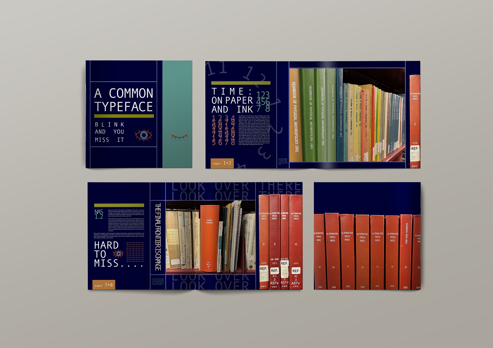
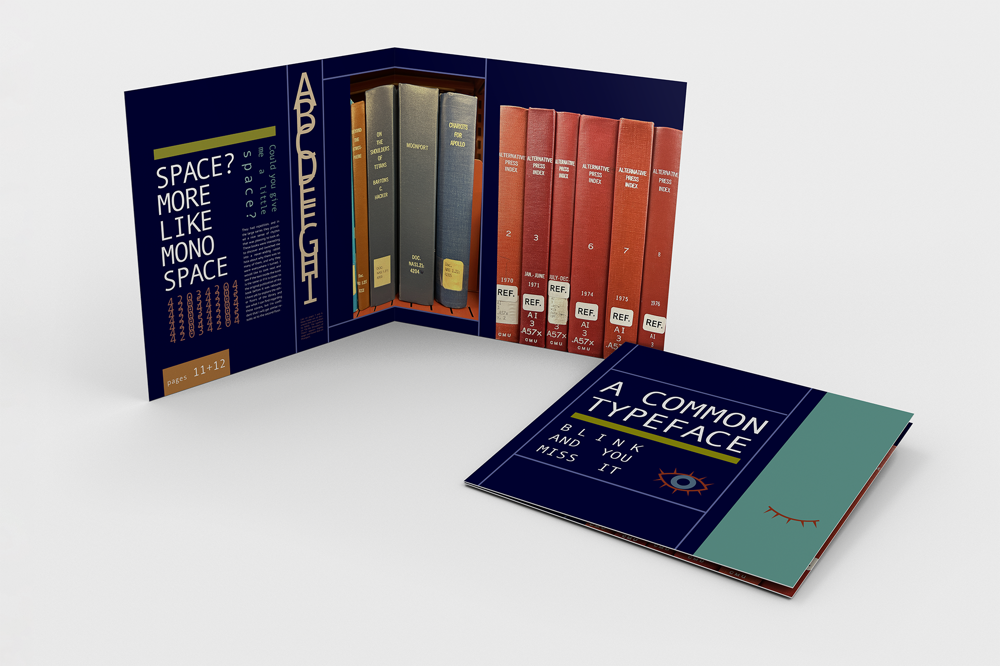
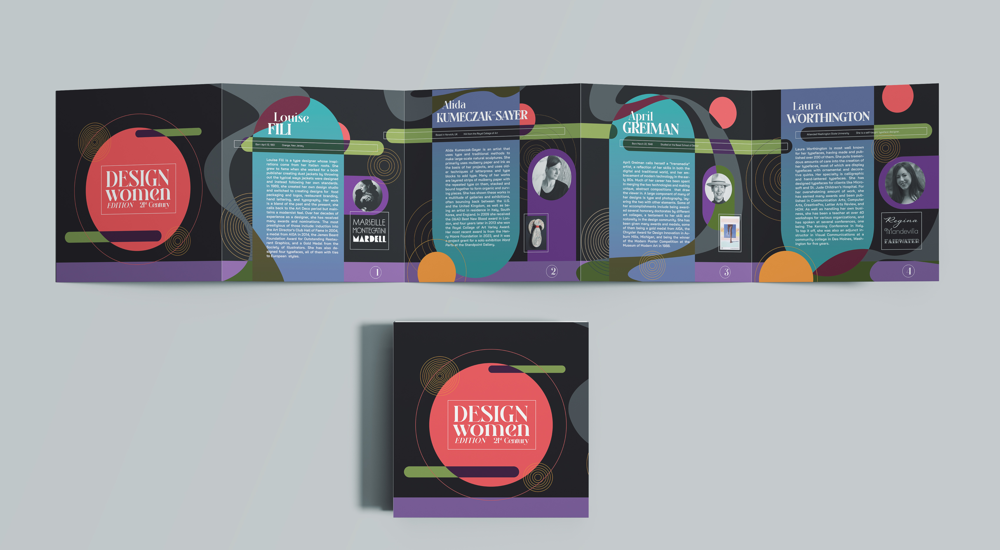
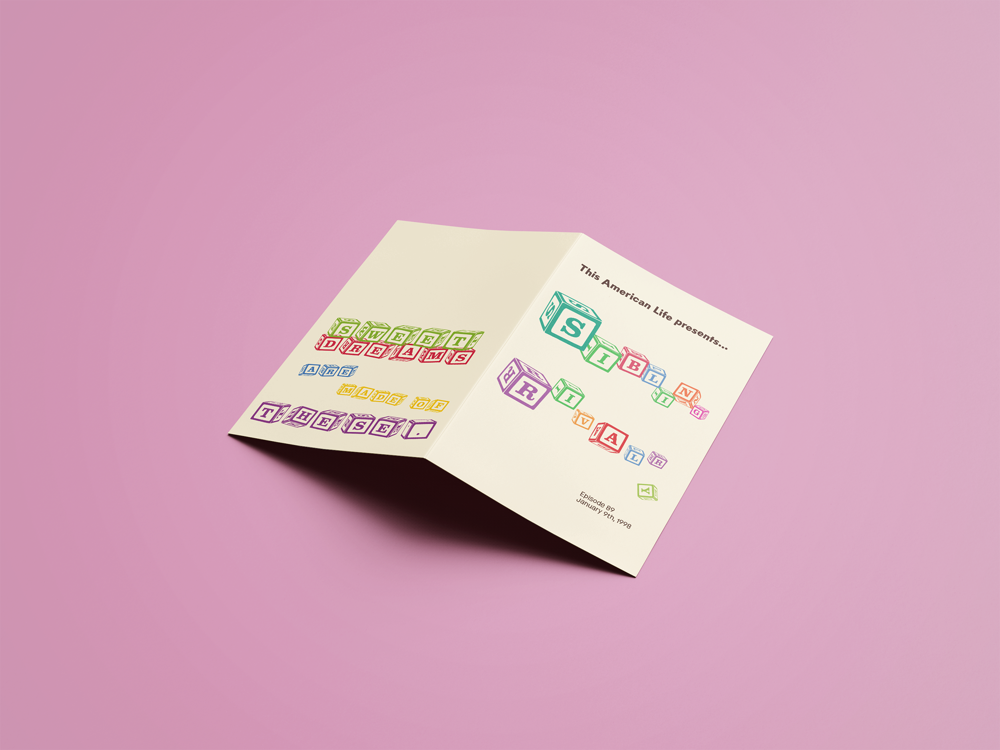
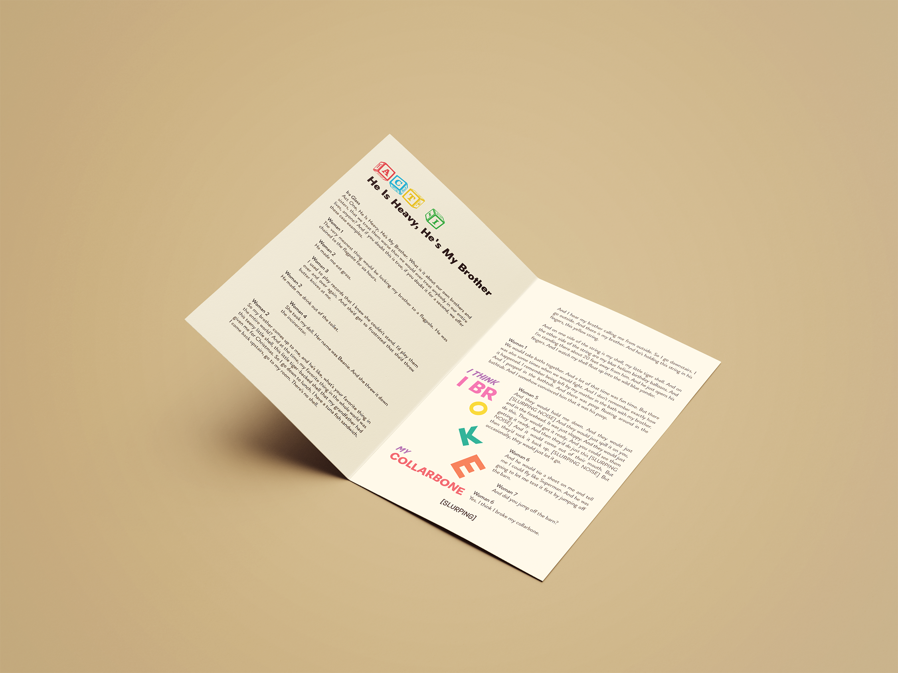

This shows a variety of booklets that I made for two different classes. The two dark ones are from my Typography class with Professor Clark Most. One is a booklet that is about a specific typeface that I found in the Park Library at CMU on various book spines. It has information that I researched after scouring the library shelves and taking photos, and some observations that I found along the way. The booklet was 16 pages long. The second project from that class is the 5-fold brochure highlighting the achievements of various women type designers. Part of the requirement was using that red color and also having overlapping elements from page to page. I chose to do a bright and organic composition on a dark background. The last project is a small booklet that was 32 pages, done in Advanced Typography with David Stairs. The objective was to set text from a podcast that we could find from This American Life. I chose the episode Sibling Rivalry, an in the design I wanted it to resemble childrens books with bright, bold colors, large text, and a sort of playful attitude that came from the block letters.